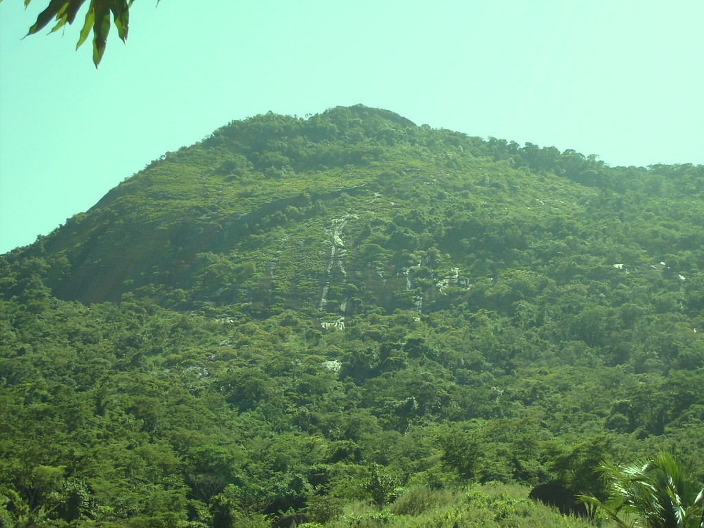

Pontos Turisticos de Alegre
Parque Estadual Cachoeira da Fumaça

Visitação:
- Aberto todos os dias, de 08 às 17 horas;
- Não é necessário agendamento;
- Visitação gratuita;
Situado na região geográfica e turística do Caparaó, teve sua área original desapropriada em agosto de 1984, por meio do decreto n°2791-E, sendo instituído e ampliado, em fevereiro de 2009, por meio dos decretos n°2220-R e n°155-S. O Parque protege nascentes e remanescentes florestais de parte da bacia hidrográfica do rio Braço Norte Direito, um dos principais afluentes do rio Itapemirim.
O Parque possui este nome pela presença da exuberante cachoeira de 144 metros de altura,
considerada a maior do Espírito Santo com água perene. Devido ao seu volume e força, a queda d' água ao se chocar contra as rochas,
forma uma nuvem de gotículas que mais parece uma nuvem de "fumaça"
Igreja Matriz Nossa Senhora da Penha

A capela Mor de Alegre começou a ser construída em barro e madeira no ano de 1851, por iniciativa dos primeiros exploradores da região.
Oficialmente, as terras do patrimônio de Alegre ficaram sobre responsabilidade da igreja com a condição de que esta doaria as terras à Nossa Senhora da Penha. Em 1868 o corpo da igreja foi edificado e a Capela Mor reparada.
Novas ampliações foram realizadas entre 1914 e 1916 e também entre 1953 e 1968. Todas essas reformas resultaram num estilo barroco-gótico. A igreja de Nossa Senhora da Penha possui ainda magníficos vitrais retratando a vida de cristo e pinturas do Indiano Diwali.
Descubra mais pontos turisticosUniversidade Federal do Espírito Santo - UFES (Campus de Alegre)

O Campus de Alegre da Universidade Federal do Espírito Santo está localizado na região sul do Espírito Santo e oferta 17 cursos de graduação, oito cursos de mestrado e três de doutorado.
Com o desmembramento do extinto Centro de Ciências Agrárias (CCA), passou a abrigar dois centros de ensino denominados Centro de Ciências Agrárias e Engenharias (CCAE) e Centro de Ciências Exatas, Naturais e da Saúde (CCENS), sendo que ambos compartilham o mesmo espaço físico, com atividades de ensino, pesquisa e extensão, em articulação com os cursos de graduação e as coordenações dos programas de pós-graduação.
Acesse mais informações sobre a Universidade aqui!Pedra do Pombal (Pico)
Distrito de Rive. Possui uma via grampeada para rapel e escalada com 70 metros de altura. Ótima opção para prática de trecking. Tem, no total, 997 metros de altitude.
Site da Pedra do PombalAntiga Estação Ferroviária

A edificação faz parte da história da estrada de ferro que cortava o município de Alegre, transportando passageiros e cargas. Era local de embarque e desembarque, além de ser ponto de encontro de moradores locais. Traz a inscrição ALEGRE em sua lateral e a cobertura frontal é sustentada por estrutura de ferro, original da construção em torno da década de 1920.
Site da ferroviáriaTabela:
| Alegre | ||
|---|---|---|
| população estimada | 29.869 pessoas(2021) | Fonte:IBGE |
| Area territorial | 756,860km² | |
| IDH | 0,721 | |
| PIB | R$ 476,962,31 | |
| PIB per capita | 15.864,35 | |
Mapa de Alegre:
Outros:
Outros locais interessantes:
- Chacara
- Minha casa
- Exposição
- Perola negra